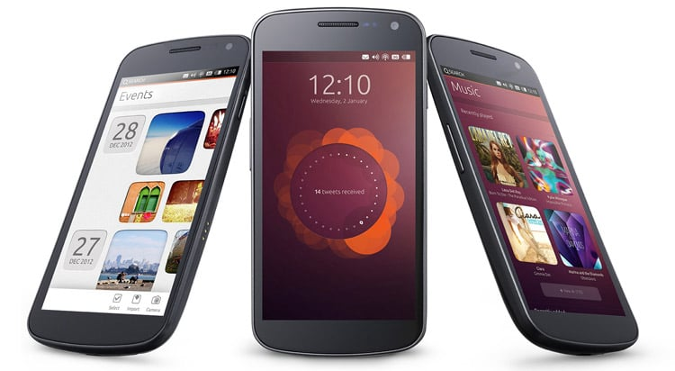
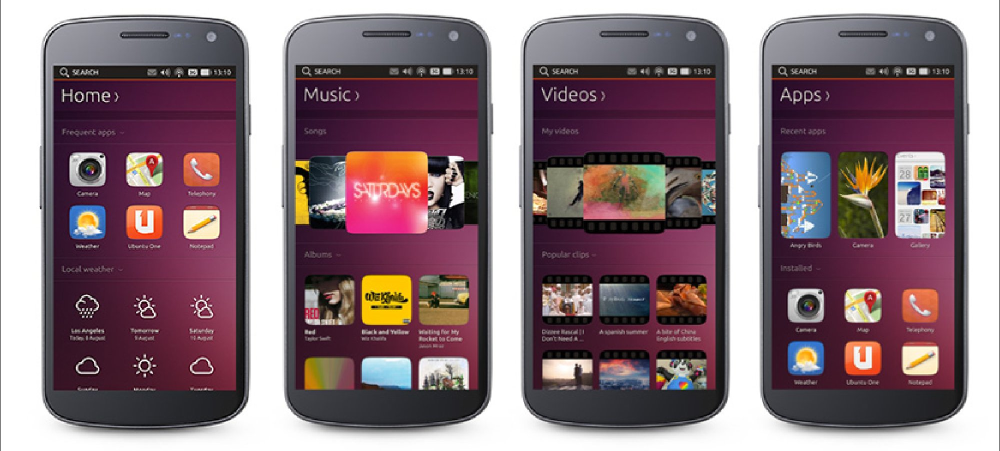
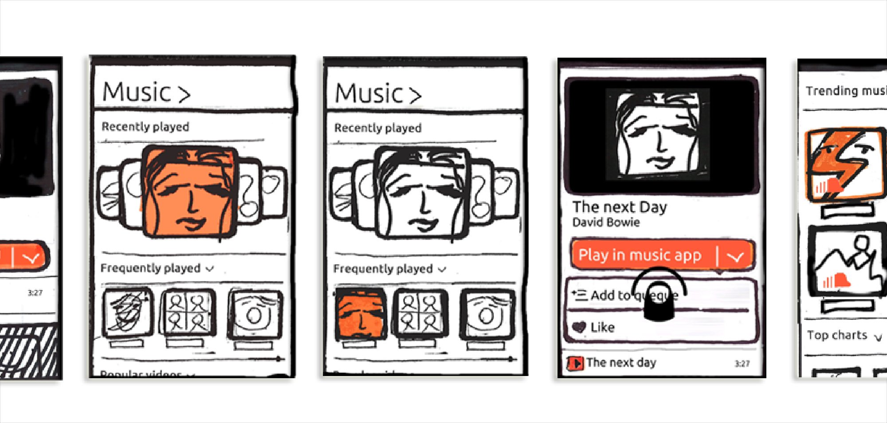
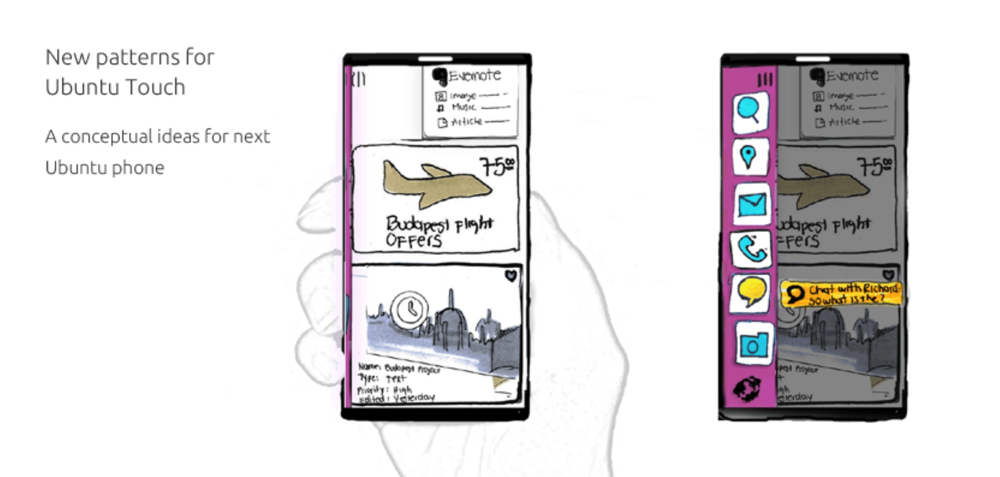

In 2012, Canonical set out to build a mobile OS that didn't just copy iOS or Android. Ubuntu Touch was an ambitious attempt to rethink the smartphone experience from the ground up — not just the visual layer, but the fundamental model of how people navigate, discover, and interact with their content.
The centrepiece of that vision was Scopes — a radical new concept for content organisation and navigation. Instead of a grid of app icons, Ubuntu Touch proposed a world of contextual, swipeable content surfaces: Music, Videos, People, Apps, News. Each Scope surfaced the most relevant content for that context, blending personal data and public discovery into one seamless experience.
I was part of the core team that conceived, sketched, and refined the Scopes concept — from initial whiteboard ideas through to the shipped OS.
Traditional smartphone home screens present apps as isolated silos — you open an app to get to your content. Ubuntu Touch flipped this: content comes to you, organised by context. Swipe left or right to move between Scopes. Each one is a curated, live surface of the content most relevant to that moment.

The shipped Scopes experience — Home, Music, Videos, and Apps. Tap image to enlarge. ↗
User research with smartphone users revealed a consistent pattern: people wanted their content immediately, without friction. These four principles guided every design decision across the Scopes system.
The Scopes concept didn't arrive fully formed. It was sketched, argued over, prototyped, discarded, and rebuilt — many times. The team moved fast, iterating on paper and in code, running user testing sessions to validate which content organisations felt natural.
Initial sketches explored how different content types — music, people, news, apps — could each have their own visual language and information hierarchy while feeling part of a coherent whole.
Prototypes were tested with smartphone users to validate the swipe navigation model, content organisation within each Scope, and the balance between personal and public content.
Beyond shipped v1, I explored next-generation interaction patterns — new models that pushed the Scopes concept further with contextual action overlays and card-based navigation.

Music Scope sketch sequence — browse → tap a track → reveal play options. Tap image to enlarge. ↗
Beyond shipping Scopes v1, I explored conceptual interaction patterns for the next generation of the Ubuntu phone. These sketches proposed a card-based content surface — rich, stacked cards combining Evernote notes, flight offers, and contextual project information in a single unified view.
The right-hand variant introduced a persistent action sidebar — a vertical strip of contextual actions (search, location, mail, call, chat, camera) that could be revealed without leaving the content surface.
These explorations pushed the core Scopes philosophy further: content-first, action-on-demand. Rather than navigating to tools and apps, the tools come to the content — surfaced contextually, dismissed when not needed.
The Budapest Project card shown in the sketch — combining a flight offer, a note, and a location-aware reminder — demonstrated how a single Scope surface could unify content from completely different sources into a coherent, task-relevant view.

New patterns for Ubuntu Touch — conceptual ideas for the next phone. Left: card-based content surface. Right: contextual action sidebar revealed on swipe. Tap to enlarge. ↗
Ubuntu Touch launched globally in March 2013 — the first major OS to propose Scopes as an alternative to the app-icon home screen paradigm.
The Ubuntu Phone was announced at CES to significant industry attention — recognised as a genuinely novel approach to mobile interaction design.
The Scopes concept — content over apps, context over hierarchy — anticipated the direction mobile OS design would move in the following decade.
"A groundbreaking approach to discovering both personal and public content — providing a seamless and intuitive way to navigate various scopes, enhancing overall interaction with the device."Ubuntu Touch — Scopes Design Vision, Canonical UK, 2013
Ubuntu Touch was one of the hardest design challenges I've worked on — not because of technical complexity, but because we were asking users to unlearn a mental model they'd had for years. The app icon grid is deeply ingrained. Proposing something different requires extraordinary clarity.
The Scopes project taught me that new paradigms need to earn their complexity. Every Scope had to be immediately understandable — what is this? what can I do here? — while also being genuinely different from anything users had seen before.
Working at the OS level meant design decisions had system-wide consequences. A navigation pattern that worked beautifully in one Scope had to work across all of them. Consistency wasn't a nice-to-have — it was the foundation of the entire experience.